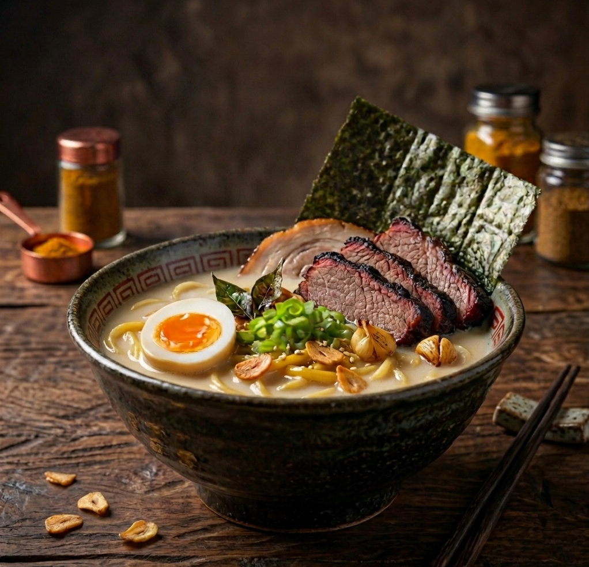
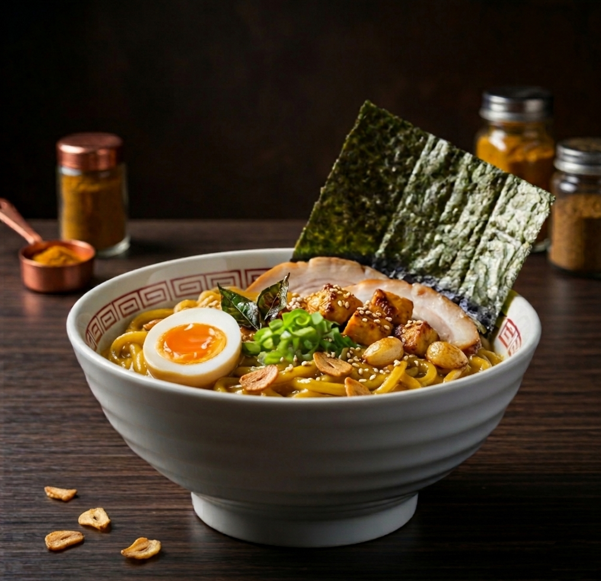
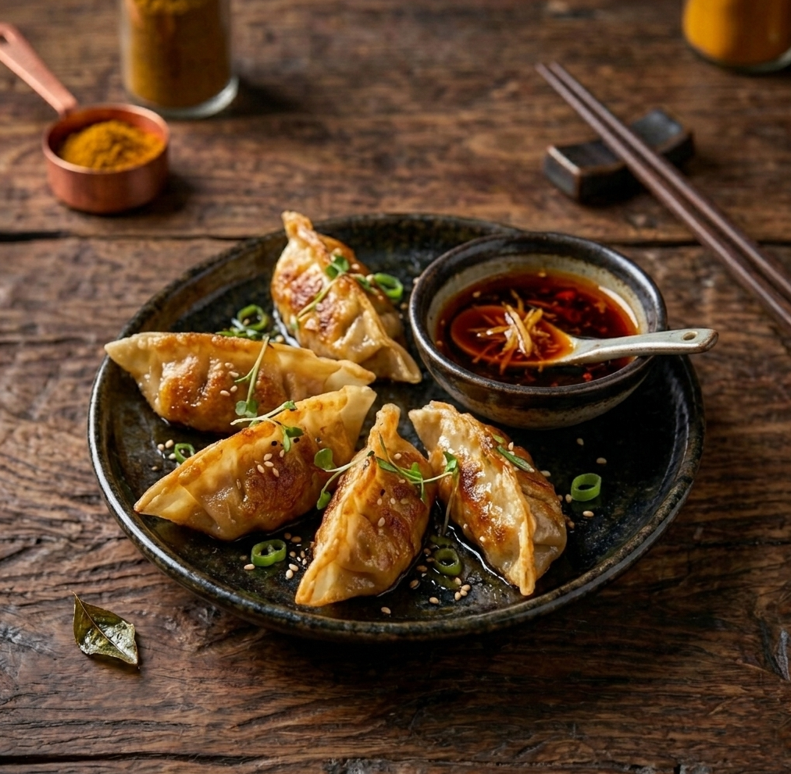
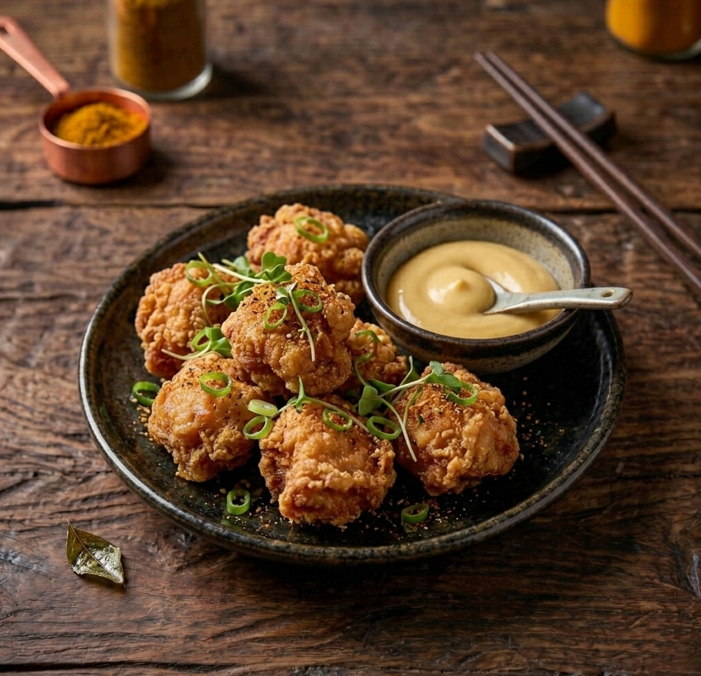
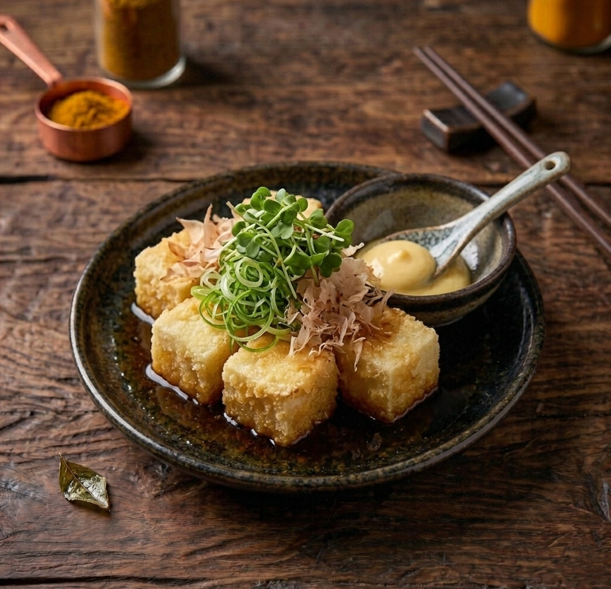

Our Masterful
Signature Menu
Dibuat dengan sabar dan sepenuh hati. Kaldu kami dimasak perlahan selama 24 jam untuk menghasilkan sari rasa yang murni dan autentik.

Aburi Beef Gyukotsu
68.0Kuah kaldu tulang sapi kental hasil rebusan 24 jam, disajikan dengan mie lurus dan irisan daging sapi yang dibakar.

Truffle Shoyu
75.0Kuah kecap asin Jepang yang bening dengan aroma minyak jamur truffle, disajikan bersama irisan daging dan rebung.

Spicy Miso
58.0Ramen dengan basis pasta miso pedas, topping daging cincang, jagung manis, dan telur rebus setengah matang.

Creamy Curry
62.0Ramen kuah kari kental khas Jepang yang gurih, lengkap dengan potongan daging, wortel, dan daun bawang segar.

Smoked Brisket Paitan
82.0Kaldu putih yang gurih dan lembut, disajikan dengan topping utama daging sapi asap (brisket) dan bawang putih goreng.

Garlic Butter Dry
55.0Mie tanpa kuah yang diaduk dengan saus bawang putih dan mentega, disajikan dengan topping telur mentah atau setengah matang.

Beef Gyoza
35.0Dumpling isi daging sapi cincang dan sayuran, dimasak dengan teknik pan-fry hingga bagian bawahnya garing.

Chicken Karaage
38.0Potongan paha ayam tanpa tulang yang digoreng tepung dengan bumbu jahe dan bawang putih.

Agedashi Tofu
28.0Tahu sutra goreng tepung yang disajikan dalam kuah cair manis-gurih dengan taburan serutan ikan cakalang.